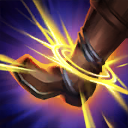
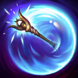

核心裝備
 盧登回音
盧登回音 黑魔禁書
黑魔禁書 視界專注
視界專注 虛空之杖
虛空之杖 死亡之帽
死亡之帽
以下為本站 7.2d 校正後的標準配置；實戰仍需依敵方陣容調整。


技能優先：E > Q > W
傷害技能會標記敵人；下一次普攻可引爆標記造成額外魔法傷害，大絕也能觸發並刷新標記。

發射光球，對前兩個命中的敵人造成魔法傷害與束縛，是抓人和自保的核心技能。

投出光杖，去程與回程都能為碰到的友軍提供護盾；調整站位可讓同一名隊友吃到兩段。
放置光區提供視野並緩速敵人，再次施放會引爆造成範圍魔法傷害，是主要清線與消耗技能。
短暫蓄力後發射超遠距光束，對直線敵人造成大量魔法傷害，並觸發與刷新被動標記。
3技先放緩速區 → 1技束縛 → 引爆3技 → 安全時普攻引爆標記
先利用光明異點限制走位，再施放光明束縛提高命中率。敵方仍有反開能力時不要為了普攻標記貼近。
1技束縛 → 3技放在腳下 → 4技直線命中 → 引爆3技 → 點燃收尾
束縛命中後先放三技再接大絕，最後引爆三技。點燃只在能確定擊殺或壓制回復時使用。
2技穿過主力 → 3技緩速突進者 → 1技束縛 → 回程再次護盾 → 4技反打收尾
面對刺客時先以雙段護盾與緩速保住主力，再用束縛固定目標。大絕放在控制確定後，避免蓄力時被直接切入。
一級以光明異點控制草叢與兵線側面，先緩速再視走位決定是否引爆。技能命中後只有在安全距離內才補普攻觸發光芒四射，避免為了被動走進鉤子或強開範圍。二級取得光明束縛後，可從斜角穿過一名士兵命中後方英雄；稜光障壁要沿射手移動路線丟出，盡量讓去程與回程都命中。
完成輔助任務後，跟著打野佈置河道與物件區視野。光明異點可先放草叢探查並封鎖入口，不必立刻引爆；束縛命中關鍵目標後再接終極閃光。團戰開始時把稜光障壁穿過前排與後排，往返兩段的群體護盾通常比多補一次傷害更有價值。
保持在主力輸出後方，以光明異點消耗與照亮黑暗區域，光明束縛優先留給突進者或走位失誤的後排。終極閃光可收尾、清線或在物件戰前壓低血量，但蓄力期間不要站到前排。敵方刺客威脅高時，護盾與束縛都應先用於保排。
對局名單是本站依英雄機制與目前配置整理的參考，不等同固定勝率。
輔助調整以團隊承傷、解控與保護主力為優先，不為了單一敵人破壞整套功能裝。
觸發：敵方主要輸出集中在射手、物理刺客或普攻型英雄。
中婭沙漏用物防與凝滯提高自保，避免輔助先被秒。
觸發：敵方主要威脅來自法師、AP刺客或大量範圍魔法傷害。
女妖面紗提供魔防與法術護盾，適合保住自己的第一輪功能。
觸發：敵方硬控能直接抓死己方主力，或你進場後會被連續控制。
女妖面紗的法術護盾能先擋一次關鍵技能，讓法師保留施法空間。
堅毅提供韌性，受到硬控時也能短暫提高雙防。
提醒：米凱主要替隊友解控；水星彎刀則是物理英雄自我解控，兩者角色不同。
觸發：敵方有大量治療、吸血或回復，讓己方集火很難完成擊殺。
標準配置已經有重創，不必重複購買。
觸發：己方只有一個主要輸出點，且敵方每波團戰都會集中切入他。
犧牲一個後期輸出位換日輪，讓輔助位的團隊價值高於個人傷害。
提醒：保排調整看己方陣容，不是看到敵方刺客就把所有功能裝都換成防裝。
7.2a 輔助路第一批正式攻略：技能名稱與核心機制依 Riot Games 台灣《激鬥峽谷》拉克絲英雄頁校正，版本基準採官方 7.2a 更新公告；出裝、符文、召喚師技能、技能順序與對局方向依本站輔助資料整合。Tier 維持本站既有輔助路評級。｜v70：套用瑟雷西 v69 輔助固定母版。
本站於 2026-08-27 依 Patch 7.2d 重新檢查此配置。 Tier、出裝、符文與對局屬於 Wild Rift Guide 的整理與分析，不是 Riot Games 官方推薦；版本改動後會再依官方公告與實戰資料校正。